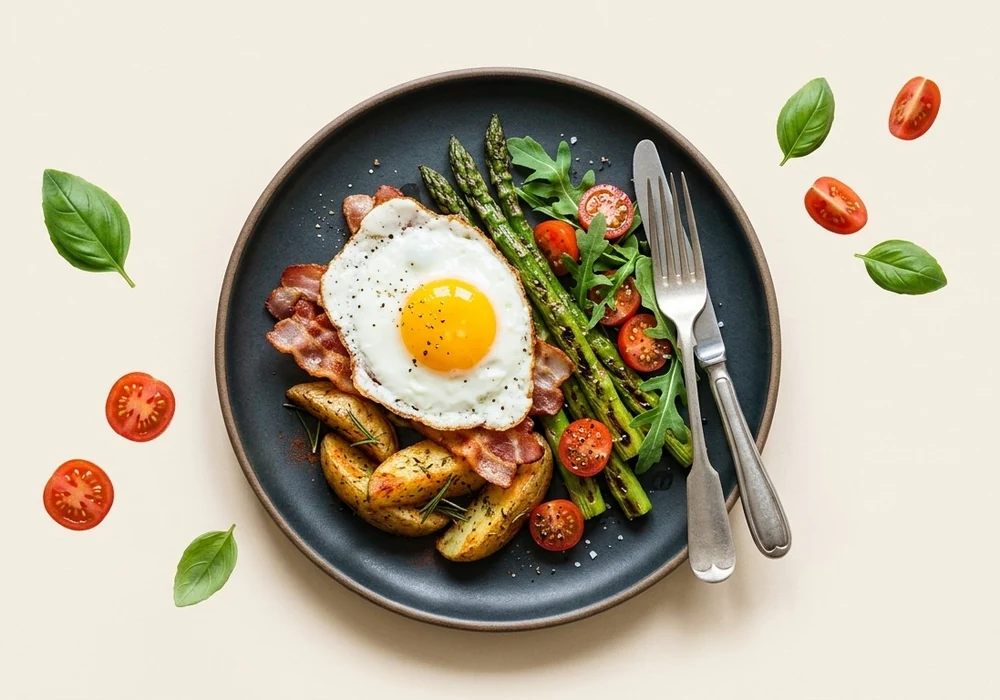

1.800 mulheresjá fizeram o plano para destravar a gravidez.
Você já começou a tentar engravidar?
Ainda dá tempo de preparar o terreno.
Quem entende o próprio ciclo antes de começar a tentar chega na primeira tentativa sabendo em que dias o corpo está pronto.
Vamos te mostrar como ler os sinais do seu ciclo antes mesmo de começar.
Você está no caminho certo!
Quando a tentativa já começou, o que mais atrasa é não saber em qual dia o corpo está fértil de verdade.
Vamos te ajudar a encontrar a sua janela fértil nas próximas tentativas.
Qual é o seu principal objetivo?
Nós sabemos como fazer isso acontecer!
Vamos criar um plano personalizado a partir do seu ciclo, dos seus sinais e do seu objetivo.
Assim, você pode destravar a sua fertilidade no seu próprio ritmo, sem adivinhação.
Seu ciclo menstrual é...
Em qual dessas áreas você sente que algo pode estar travado?
Toque e selecione as áreas abaixo
MENTE E EMOÇÕESMEU CORPOMEU PROPÓSITOMEU CICLO
Há quanto tempo está tentando engravidar?
Seu corpo avisa quando está fértil.
Só que quase ninguém ensina a ler esses avisos. Por isso tanta mulher tenta no dia errado, mês após mês, achando que o problema é ela.
As próximas 4 perguntas mostram se você já reconhece esses sinais e se algo no seu dia a dia está atrapalhando sua fertilidade.
Você sabe quando está ovulando?
Como você identifica seu período fértil?
Você usa sabonete íntimo, ducha ou lenços umedecidos com frequência?
A resposta pode explicar por que o ciclo não progride como deveria.
Você esquenta comida em pote de plástico ou usa cosméticos com parabenos?
Os dois soltam substâncias que imitam hormônios e atrapalham a ovulação.
Como você descreveria seu estresse hoje?
Você tem algum momento do dia só para você, sem trabalho ou preocupações?
Você fica ansiosa quando a menstruação está para chegar?
Com que intensidade você sente a pressão de engravidar?
Seu humor muda bastante ao longo do dia?
Como você descreveria seu sono nos últimos meses?
Com que frequência você pratica alguma atividade física?
Como você descreveria sua alimentação no dia a dia?

Você sente inchaço, cansaço ou dores frequentes sem causa aparente?
Como você se sente em relação ao seu corpo hoje?
Você se sente acompanhada nessa jornada?
Você ainda acredita que vai conseguir engravidar?
Você costuma se culpar quando o ciclo não vem como esperado?
Quantos dias dura seu ciclo em média?
Do 1º dia de uma menstruação até o 1º dia da próxima.
Duraçãodias
Digite um valor entre 15 e 90 dias
☝️
Isso personaliza sua janela fértil sem usar a média genérica de 28 dias.
Quantos dias dura sua menstruação?
Quantos dias o sangramento em si dura, do início até parar.
Duraçãodias
Digite um valor entre 1 e 15 dias
‼️
Padrão registrado
Vamos cruzar essa informação com os sinais que você percebe para construir seu Nível de Leitura do Ciclo.
☝️
Menos de 3 ou mais de 7 dias sinaliza desequilíbrio hormonal.
Em quantos dias seu desejo sexual aumenta no mês?
Se você não percebe, digite 0. Esse é um dos sinais secundários da ovulação.
Duraçãodias
Digite um valor entre 0 e 31 dias
☝️
Libido e fertilidade estão ligadas
A libido sobe nos dias férteis. Se não acontece com você, a ovulação pode estar passando despercebida.
Aqui está o seu perfil fértil
Índice de Qualidade da Ovulação (IQO)
Você · 0
0254568100
CríticoBaixoParcialConsciente
Ciclo
Emocional
Organismo
Propósito
Quando começou sua última menstruação?
Com essa data calculamos sua próxima janela fértil.
//
Digite dia, mês e ano da sua última menstruação
0%
Criando seu Plano Ciclo Fértil...
Seu Plano Ciclo Fértil personalizado está pronto!
Mais de 1.800 mulheres
já escolheram o Ciclo Fértil
Engravidei no ciclo seguinteAna Paula R.
Tentei por 14 meses. Aprendi a ler o muco em 3 semanas e engravidei no ciclo seguinte.
Era o sabonete íntimoCamila T.
Não sabia que o sabonete íntimo estava sabotando tudo. Mudei a higiene e foi.
Reconheci todos os sinaisFernanda M.
Em 6 semanas comecei a reconhecer todos os sinais. Engravidei no mês seguinte.
*Atenção: seguir o plano é essencial para o resultado. Os resultados individuais podem variar.
Digite seu e-mail para receber seu Plano Ciclo Fértil personalizado e engravidar
Respeitamos sua privacidade e estamos comprometidos em proteger seus dados pessoais. Seus dados serão processados de acordo com nossa Política de Privacidade.
Qual é o seu nome?
O plano que finalmente vai ajudar você a engravidar
Estimamos que você poderá ter alta chance de positivo até —*
100755025
Alta chance —
——
*Com base nos dados de mulheres que registram seu progresso no app. Seguir o plano tem um grande impacto nos resultados. O gráfico é uma ilustração genérica, e os resultados podem variar. Consulte seu médico antes de começar.
“
Nosso Plano Ciclo Fértil ajudará você a alcançar resultados a longo prazo.
Ele combina a leitura dos sinais do seu ciclo com nutrição e rotina para garantir seu progresso.
Atividades de 5 a 15 minutospara caber num dia que já está cheio
As 4 de hoje, escolhidas pra vocêo app mostra só as do dia, não uma lista de 98
Leitura dos sinais do seu ciclomuco, temperatura e dor, pra parar de adivinhar a janela fértil
Tudo feito em casasem clínica, sem consulta, sem exame novo
Semana a semana, na ordema próxima abre quando você fecha a de agora
Seu índice de ovulação à vistao número sobe conforme você faz
Seu progresso
Dia 1
Dia 2
Dia 3Pastoso
Dia 4DESCANSO
Dia 5Cremoso
Dia 6Elástico
Dia 7CLARA DE OVO
Dia 836.2°C
Dia 936.3°C
Dia 1036.5°C
Dia 1136.7°C
Dia 12DESCANSO
Dia 1336.8°C
Dia 1437.0°C
Dia 15Dor leve lateral
Dia 16Libido alta
APP STORE
GOOGLE PLAY
★★★★★
APP DO DIAem mais de 20 países
Resultados que nos deixam orgulhosos
Marina Silveira, São Paulo
Tentei por quase 2 anos. Em 6 semanas com o plano, entendi meu ciclo pela primeira vez. No mês seguinte, engravidei.
Perguntas Frequentes
Em quanto tempo vejo mudanças?
A maioria reconhece os sinais do muco e da ovulação entre a 2ª e a 4ª semana. O plano é semanal, então cada semana já traz uma coisa nova pra observar no próprio corpo.
Funciona para ciclos muito irregulares?
Sim. O plano foi desenvolvido especialmente para ciclos irregulares — é justamente quando o calendário não serve que ler os sinais do corpo passa a fazer diferença.
Preciso mudar minha rotina inteira?
Não. São atividades de 5 a 15 minutos, e o app mostra só as do dia. Você abre, vê as quatro de hoje e pronto.
Histórias reais de quem aplicou o plano
Engravidei no ciclo seguinteAna Paula R.
Tentei por 14 meses. Aprendi a ler o muco em 3 semanas e engravidei no ciclo seguinte.
Era o sabonete íntimoCamila T.
Não sabia que o sabonete íntimo estava sabotando tudo. Mudei a higiene e foi.
Seis semanas pra ler os sinaisFernanda M.
Em 6 semanas comecei a reconhecer todos os sinais. Engravidei no mês seguinte.
Pela primeira vez eu sabia o que fazerJuliana B.
O plano me devolveu a esperança. Pela primeira vez eu sabia exatamente o que estava errado — e o que fazer a respeito.